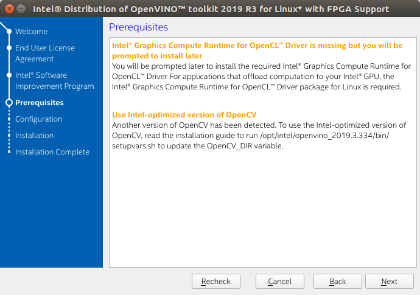
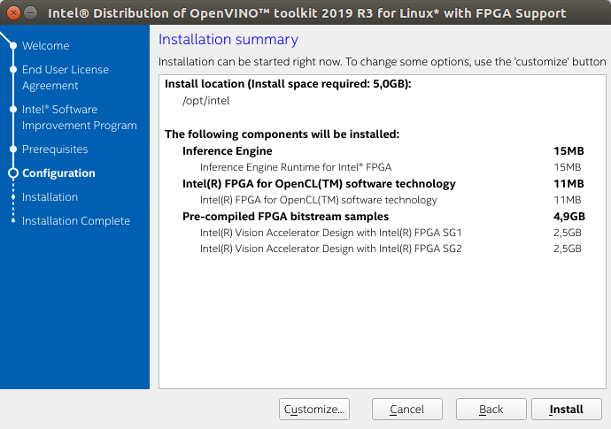
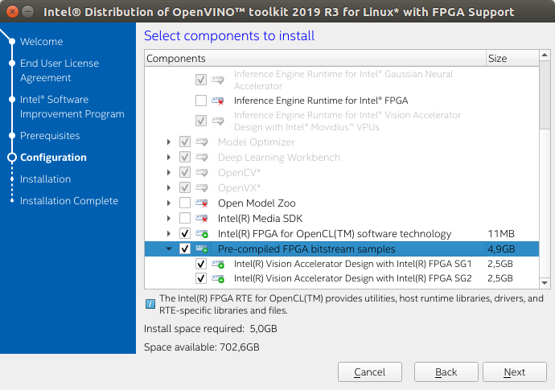
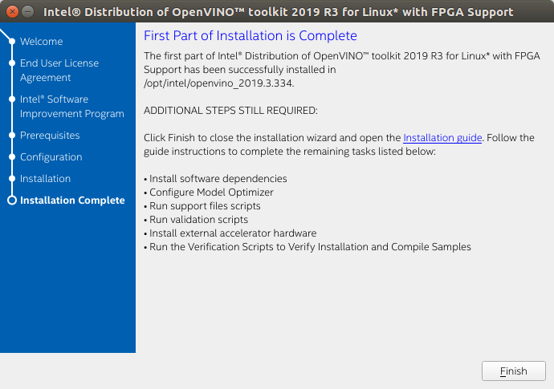
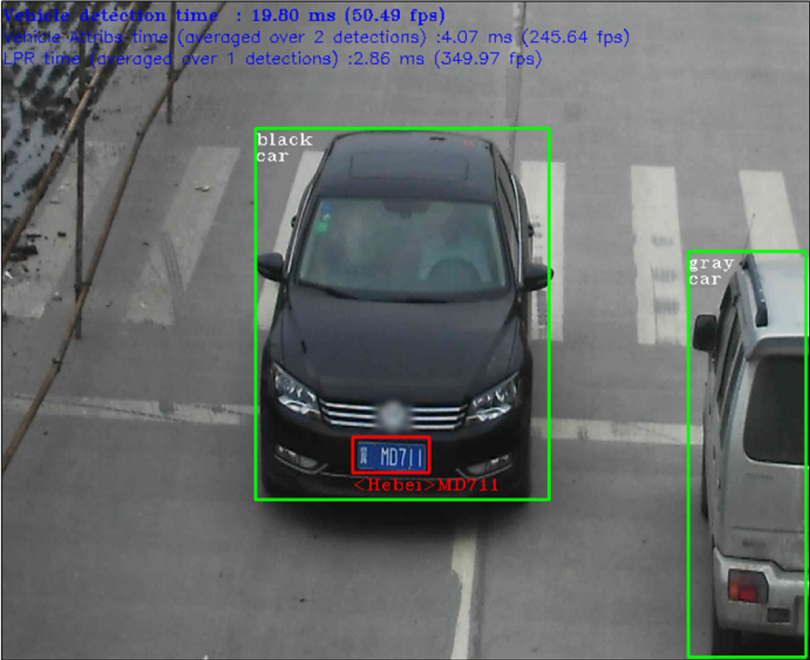

NOTES:
- Intel® System Studio is an all-in-one, cross-platform tool suite, purpose-built to simplify system bring-up and improve system and IoT device application performance on Intel® platforms. If you are using the Intel® Distribution of OpenVINO™ with Intel® System Studio, go to Get Started with Intel® System Studio.
- The Intel® Distribution of OpenVINO™ toolkit was formerly known as the Intel® Computer Vision SDK.
- These steps apply to Ubuntu*, CentOS*, and Yocto*.
- If you are using Intel® Distribution of OpenVINO™ toolkit on Windows* OS, see the Installation Guide for Windows*.
- For the Intel Distribution of OpenVINO toolkit without FPGA support, see Installation Guide for Linux*.
- CentOS and Yocto installations will require some modifications that are not covered in this guide.
- An internet connection is required to follow the steps in this guide.
Introduction
The Intel® Distribution of OpenVINO™ toolkit quickly deploys applications and solutions that emulate human vision. Based on Convolutional Neural Networks (CNN), the toolkit extends computer vision (CV) workloads across Intel® hardware, maximizing performance. The Intel® Distribution of OpenVINO™ toolkit includes the Intel® Deep Learning Deployment Toolkit (Intel® DLDT).
The Intel® Distribution of OpenVINO™ toolkit for Linux* with FPGA Support:
- Enables CNN-based deep learning inference on the edge
- Supports heterogeneous execution across Intel® CPU, Intel® Integrated Graphics, Intel® FPGA, Intel® Movidius™ Neural Compute Stick, and Intel® Neural Compute Stick 2
- Speeds time-to-market via an easy-to-use library of computer vision functions and pre-optimized kernels
- Includes optimized calls for computer vision standards including OpenCV*, OpenCL™, and OpenVX*
Included with the Installation and installed by default:
| Component | Description |
|---|---|
| Model Optimizer | This tool imports, converts, and optimizes models that were trained in popular frameworks to a format usable by Intel tools, especially the Inference Engine. Popular frameworks include Caffe*, TensorFlow*, MXNet*, and ONNX*. |
| Inference Engine | This is the engine that runs the deep learning model. It includes a set of libraries for an easy inference integration into your applications. |
| Drivers and runtimes for OpenCL™ version 2.1 | Enables OpenCL on the GPU/CPU for Intel® processors |
| Intel® Media SDK | Offers access to hardware accelerated video codecs and frame processing |
| Pre-compiled FPGA bitstream samples | Pre-compiled bitstream samples for the Intel® Programmable Acceleration Card with Intel® Arria® 10 GX FPGA, and Intel® Vision Accelerator Design with an Intel® Arria 10 FPGA SG1 or SG2. |
| Intel® FPGA SDK for OpenCL™ software technology | The Intel® FPGA RTE for OpenCL™ provides utilities, host runtime libraries, drivers, and RTE-specific libraries and files |
| OpenCV | OpenCV* community version compiled for Intel® hardware |
| OpenVX* version 1.1 | Intel's implementation of OpenVX* 1.1 optimized for running on Intel® hardware (CPU, GPU, IPU) |
| Demos and Sample Applications | A set of simple console applications demonstrating how to use the Inference Engine in your applications |
Development and Target Platform
The development and target platforms have the same requirements, but you can select different components during the installation, based on your intended use.
Hardware
- 6th-10th Generation Intel® Core™
- Intel® Xeon® v5 family
- Intel® Xeon® v6 family
- Intel® Pentium® processor N4200/5, N3350/5, N3450/5 with Intel® HD Graphics
- Intel® Movidius™ Neural Compute Stick
- Intel® Neural Compute Stick 2
- Intel® Programmable Acceleration Card (PAC) with Intel® Arria® 10 GX FPGA
- Intel® Vision Accelerator Design with an Intel® Arria 10 FPGA (Mustang-F100-A10) SG1 or SG2
NOTE: Intel® Arria® 10 GX FPGA Development Kit is no longer supported in 2019 R2. For the Intel® Arria® 10 FPGA GX Development Kit configuration guide, refer to the 2019 R1.1 documentation.
Processor Notes:
- Processor graphics are not included in all processors. See Product Specifications for information about your processor.
- A chipset that supports processor graphics is required for Intel® Xeon® processors.
Operating Systems:
- Ubuntu 18.04.2 long-term support (LTS), 64-bit: Minimum supported kernel is 4.15
- CentOS 7.4, 64-bit
- Yocto Project Poky Jethro v2.0.3, 64-bit (for target only and requires modifications)
Overview
This guide provides step-by-step instructions on how to install the Intel® Distribution of OpenVINO™ toolkit with FPGA Support. Links are provided for each type of compatible hardware including downloads, initialization and configuration steps. The following steps will be covered:
- Install the Intel® Distribution of OpenVINO™ Toolkit
- Install External software dependencies
- Configure the Model Optimizer
- Run the Verification Scripts to Verify Installation and Compile Samples
- Install your compatible hardware from the list of supported hardware
- Use the Face Detection Tutorial
Install the Intel® Distribution of OpenVINO™ Toolkit Core Components
Download the Intel® Distribution of OpenVINO™ toolkit package file from Intel® Distribution of OpenVINO™ toolkit for Linux* with FPGA Support. Select the Intel® Distribution of OpenVINO™ toolkit for Linux with FPGA Support package from the dropdown menu.
- Open a command prompt terminal window.
- Change directories to where you downloaded the Intel Distribution of OpenVINO toolkit for Linux* with FPGA Support package file.
If you downloaded the package file to the current user'sDownloadsdirectory:By default, the file is saved ascd ~/Downloads/l_openvino_toolkit_fpga_p_<version>.tgz. - Unpack the .tgz file: The files are unpacked to thetar -xvzf l_openvino_toolkit_fpga_p_<version>.tgz
l_openvino_toolkit_fpga_p_<version>directory. - Go to the
l_openvino_toolkit_fpga_p_<version>directory:If you have a previous version of the Intel Distribution of OpenVINO toolkit installed, rename or delete these two directories:cd l_openvino_toolkit_fpga_p_<version>
/home/<user>/inference_engine_samples/home/<user>/openvino_models
Installation Notes:
- Choose an installation option and run the related script as root.
- You can use either a GUI installation wizard or command-line instructions (CLI).
- Screenshots are provided for the GUI, but not for CLI. The following information also applies to CLI and will be helpful to your installation where you will be presented with the same choices and tasks.
- Choose your installation option:
- Option 1: GUI Installation Wizard: sudo ./install_GUI.sh
- Option 2: Command-Line Instructions: sudo ./install.sh
- Option 1: GUI Installation Wizard:
- Follow the instructions on your screen. Watch for informational messages such as the following in case you must complete additional steps: 
- If you select the default options, the Installation summary GUI screen looks like this: 
- Optional: You can choose Customize and select only the bitstreams for your card. This will allow you to minimize the size of the download by several gigabytes.
- The following bitstreams listed at the bottom of the customization screen are highlighted below. Choose the one for your FPGA: 
- When installed as root the default installation directory for the Intel Distribution of OpenVINO is
/opt/intel/openvino_fpga_2019.<version>/.
For simplicity, a symbolic link to the latest installation is also created:/opt/intel/openvino/.
- A Complete screen indicates that the core components have been installed: 
The first core components are installed. Continue to the next section to install additional dependencies.
Install External Software Dependencies
These dependencies are required for:
- Intel-optimized build of OpenCV library
- Deep Learning Inference Engine
- Deep Learning Model Optimizer tools
- Change to the
install_dependenciesdirectory:cd /opt/intel/openvino/install_dependencies - Run a script to download and install the external software dependencies: sudo -E ./install_openvino_dependencies.sh
The dependencies are installed. Continue to the next section to configure the Model Optimizer.
Configure the Model Optimizer
The Model Optimizer is a Python*-based command line tool for importing trained models from popular deep learning frameworks such as Caffe*, TensorFlow*, Apache MXNet*, ONNX* and Kaldi*.
The Model Optimizer is a key component of the Intel Distribution of OpenVINO toolkit. You cannot perform inference on your trained model without running the model through the Model Optimizer. When you run a pre-trained model through the Model Optimizer, your output is an Intermediate Representation (IR) of the network. The Intermediate Representation is a pair of files that describe the whole model:
.xml: Describes the network topology.bin: Contains the weights and biases binary data
For more information about the Model Optimizer, refer to the Model Optimizer Developer Guide.
Model Optimizer Configuration Steps
IMPORTANT: The Internet access is required to execute the following steps successfully. If you have access to the Internet through the proxy server only, please make sure that it is configured in your environment.
You can choose to either configure all supported frameworks at once OR configure one framework at a time. Choose the option that best suits your needs. If you see error messages, make sure you installed all dependencies.
NOTE: If you installed the Intel® Distribution of OpenVINO™ to the non-default install directory, replace
/opt/intelwith the directory in which you installed the software.
Option 1: Configure all supported frameworks at the same time
- Go to the Model Optimizer prerequisites directory: cd /opt/intel/openvino/deployment_tools/model_optimizer/install_prerequisites
- Run the script to configure the Model Optimizer for Caffe, TensorFlow, MXNet, Kaldi*, and ONNX: sudo ./install_prerequisites.sh
Option 2: Configure each framework separately
Configure individual frameworks separately ONLY if you did not select Option 1 above.
- Go to the Model Optimizer prerequisites directory: cd /opt/intel/openvino/deployment_tools/model_optimizer/install_prerequisites
- Run the script for your model framework. You can run more than one script:
- For Caffe:
- For TensorFlow: sudo ./install_prerequisites_tf.sh
- For MXNet: sudo ./install_prerequisites_mxnet.sh
- For ONNX: sudo ./install_prerequisites_onnx.sh
- For Kaldi: The Model Optimizer is configured for one or more frameworks.sudo ./install_prerequisites_kaldi.sh
You are ready to compile the samples by running the verification scripts.
Run the Verification Scripts to Verify Installation and Compile Samples
To verify the installation and compile two samples, run the verification applications provided with the product on the CPU:
- Go to the Inference Engine demo directory: cd /opt/intel/openvino/deployment_tools/demo
- Run the Image Classification verification script: This verification script downloads a SqueezeNet model, uses the Model Optimizer to convert the model to the .bin and .xml Intermediate Representation (IR) files. The Inference Engine requires this model conversion so it can use the IR as input and achieve optimum performance on Intel hardware../demo_squeezenet_download_convert_run.sh
This verification script builds the Image Classification Sample Async application and run it with thecar.pngimage in the demo directory. When the verification script completes, you will have the label and confidence for the top-10 categories:
Run the Inference Pipeline verification script:
./demo_security_barrier_camera.shThis verification script builds the Security Barrier Camera Demo application included in the package.
This verification script uses the
car_1.bmpimage in the demo directory to show an inference pipeline using three of the pre-trained models. The verification script uses vehicle recognition in which vehicle attributes build on each other to narrow in on a specific attribute.First, an object is identified as a vehicle. This identification is used as input to the next model, which identifies specific vehicle attributes, including the license plate. Finally, the attributes identified as the license plate are used as input to the third model, which recognizes specific characters in the license plate.
When the verification script completes, you will see an image that displays the resulting frame with detections rendered as bounding boxes, and text:
- Close the image viewer window to complete the verification script.
To learn about the verification scripts, see the README.txt file in /opt/intel/openvino/deployment_tools/demo.
For a description of the Intel Distribution of OpenVINO™ pre-trained object detection and object recognition models, see Overview of OpenVINO™ Toolkit Pre-Trained Models.
You have completed all required installation, configuration and build steps in this guide to use your CPU to work with your trained models. To use other hardware, see Install and Configure your Compatible Hardware below.
Install and Configure Your Compatible Hardware
Install your compatible hardware from the list of supported components below.
NOTE: Once you've completed your hardware installation, you'll return to this guide to finish installation and configuration of the Intel® Distribution of OpenVINO™ toolkit.
Links to install and configure compatible hardware
- The Intel® Programmable Acceleration Card (PAC) with Intel® Arria® 10 GX FPGA
- The Intel® Vision Accelerator Design with an Intel® Arria 10 FPGA SG1 or SG2 (Mustang-F100-A10)
- Intel® Vision Accelerator Design with Intel® Movidius™ VPUs
Congratulations, you have finished the Intel® Distribution of OpenVINO™ toolkit installation for FPGA. To learn more about how the Intel® Distribution of OpenVINO™ toolkit works, the Hello World tutorial and other resources are provided below.
Hello World Face Detection Tutorial
Refer to the OpenVINO™ with FPGA Hello World Face Detection Exercise.
Additional Resources
- Intel® Distribution of OpenVINO™ toolkit home page: https://software.intel.com/en-us/openvino-toolkit
- OpenVINO™ toolkit online documentation: https://docs.openvinotoolkit.org
- Inference Engine FPGA plugin documentation
- Model Optimizer Developer Guide.
- For more information on Sample Applications, see the Inference Engine Samples Overview
- To learn about pre-trained models for OpenVINO™ toolkit, see the Pre-Trained Models Overview
- For information on Inference Engine Tutorials, see the Inference Tutorials
- For IoT Libraries & Code Samples see the Intel® IoT Developer Kit.
To learn more about converting models, go to: